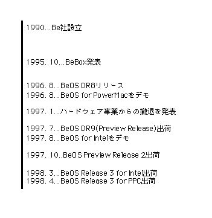
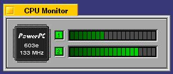
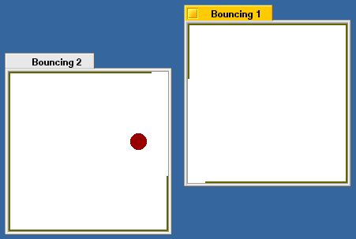
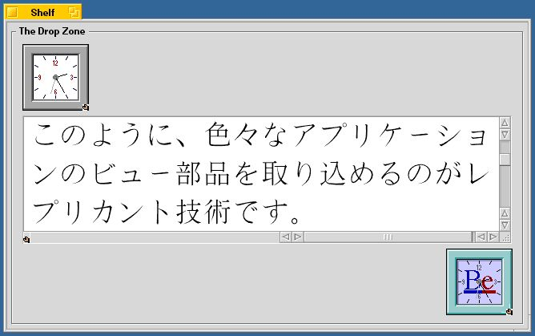
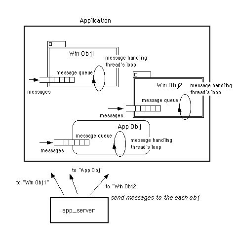
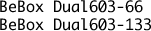
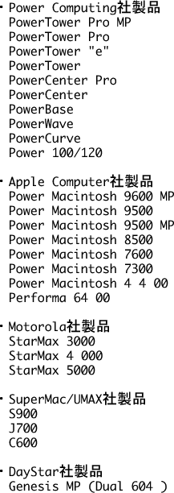
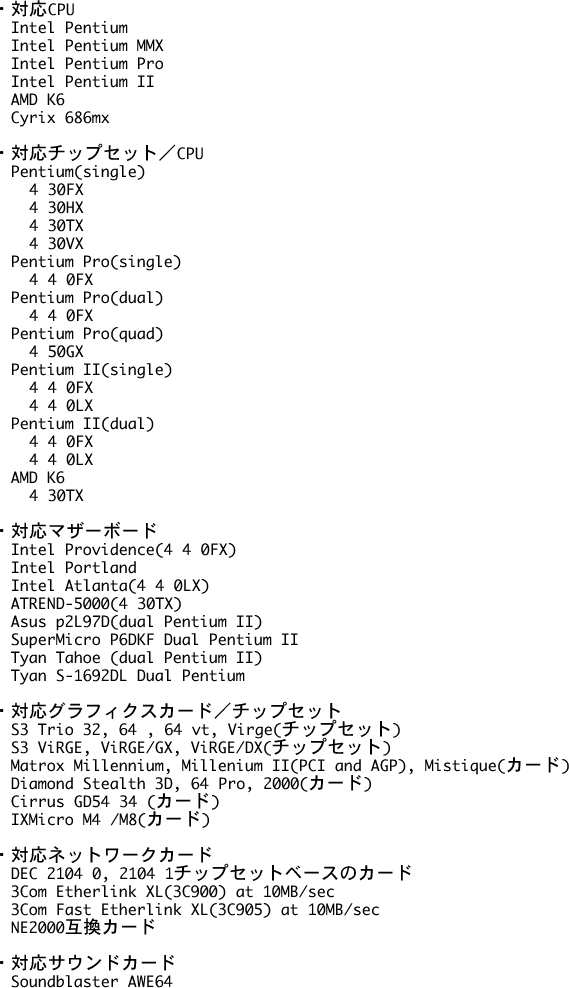

第1章 BeOSとは何か
まず、BeOSの登場からこれまでの経緯を述べ、次にどのような特徴があるのかを解説します。その後で、サポートしている機種や入手方法とインストール手順について説明を行います。
1.1 これまでの経緯
最初、BeOSはマルチプロセッサマシン「BeBox」の専用OSとして登場しました。BeBoxは'95年10月にBe社から発表され[1]、先進的なディベロッパーやユーザの関心を集めたマシンです。PowerPCプロセッサを2個搭載し、オーディオとMIDIの入出力ポートをはじめ豊富なデータ入出力ポートを装備した、新しいパーソナルコンピュータの姿を感じさせるものでした。価格も、登録ディベロッパー向けとはいえ$2,000～$3,000と比較的安く、ハイエンドのMacintoshや、またローエンドのグラフィクスワークステーションよりも魅力的なものでした。実際、これらのマシンに興味があるユーザに使ってもらうことを考えていたようです。その後、'96年の秋にはPowerMacで動く“BeOS for PowerMac”が発表され、明けた'97年の1月末にBe社はハードウェア事業からの撤退を発表しました。この時点で、事実上BeOSはBeBoxの付属物ではなく、単体で販売されるOSとなったのです。さらに、同じ年の8月にはIntel Box(PC)で動くバージョンのデモが公開され、先日('98年3月)ついに正式版の出荷が始まったのは皆さんご存じの通りです。

図[1.2] '95年～'98年までの動きを年表にした図版
なお、Be社が設立されたのは'90年ですが、最初に作られたBeBoxのプロトタイプではPowerPCが使われていませんでした。最初はAT&T社製の“Hobbit”チップとDSPを使ってBeBoxの開発を始め、プロトタイプも作られたのですが、同社がHobbitチップの製造から撤退したため、PowerPCベースのマシン開発へ移行したそうです[2]。
1.2 大まかな特徴
BeOSの主な特徴を以下に示します。a.) マイクロカーネル構造
b.) 全体的なモジュール化
c.) 広範なマルチスレッド機構
d.) 64ビットのファイルシステム
e.) GUIとUnixシェルの同居
f.) TCP/IP及びAppleTalkのサポート
g.) 外部ファイルシステムのサポート
h.) 柔軟なアプリケーション間連携機構
i.) 理解し易いフレームワーク型API
j.) 自然な並列・平行処理
k.) マルチメディア処理に便利なAPI
上に挙げた特徴のうち、(a)～(d)はどちらかといえばOSの内部構造に関するもの、そして(e)～(h)はユーザの立場からみた使い勝手に関するもので、最後の(i)～(k)が、本書の主な読者として考えているアプリケーションプログラマにとって重要なものです。それでは、これらについて順に説明していきましょう。
■マイクロカーネル構造
NEXTSTEPやWindowsNT、またMkLinuxと同様、BeOSはマイクロカーネルを用いて構築されています。マイクロカーネルを使うことの利点の一つは、OSのモジュール化が進み、その結果として移植性や保守性が高くなることです。約二年という短い期間で、BeBoxからPowerMac、またIntel Boxへの移植が無事行われたのは、マイクロカーネルによる移植性の高さが貢献したのでしょう(注1-1)。
BeOSの内部構造については第2章で詳しく述べますが、マイクロカーネル化されたOSの特徴として、ネットワーク処理やグラフィクス処理などのモジュールがカーネルから分離され、独立したプロセスとして動作する[3]ことが挙げられます。この結果、分離されたモジュールが障害を起こしてもOS全体がクラッシュしにくくなるという特長が得られ、それだけ堅牢性の高いシステムを実現できるのも有難いところです。ただし、マイクロカーネル化されたOSでは、アプリケーションとモジュール間でのプロセス間通信がオーバーヘッドになり易いという欠点があります。BeOSではこれを克服するために、ファイルシステムのドライバをマイクロカーネル側に置いたり、またグラフィクスモジュールを高機能なものにして、アプリケーションとの通信量を抑えるといった対策をとっています(注1-2)。
■全体的なモジュール化
OSの内部だけでなく、アプリケーションが利用するライブラリもモジュール化が進んでおり、システム全体として高いモジュール性を持ちます。システムが提供するライブラリは全て動的リンクライブラリ(2.5参照;WindowsでいうDLL)であり、全てのアプリケーションが共有して使います。したがって、それぞれのアプリケーションがライブラリを静的リンクする場合に比べ、メモリの使用効率が高くなっています。
■広範なマルチスレッド機構
BeOSではマルチスレッド機構を実現しており、一つのプログラムの中で、複数の部分を並行して同時に実行することが可能です。OS内部や各アプリケーションがマルチスレッド化されているため、システムのあらゆる部分が効率良く並行動作します。OS自体をマルチスレッド化することによってシステムの応答性が良くなることは、既にSolarisやWindowsNT、またMacOS 8のFinderなどでも実証されていますが、BeOSではよりきめ細かくマルチスレッド化されており、ファイルのコピーやムービーの再生などを同時に行った場合でも、良好な応答性を示します。BeOSがマルチスレッド性の高いシステムであることの例としては、第3章の説明(3.2.4)を読んでみて下さい。
さらに、SolarisやWindowsNTなどと同様、対称型マルチプロセッシングが実現されているため、各スレッドはOSによって自動的に手の空いたプロセッサ(CPU)に割り当てられ、並列に実行されます。前述したように、BeOSではシステム全体がきめ細かくマルチスレッド化されていますから、マルチプロセッサ機で動かすとそれだけ並列実行の度合が高く、より性能を活かすことができるのです。

図[1.3] BeBoxなど、マルチプロセッサ機で動く"Pulse"の画面キャプチャ
■64ビットのファイルシステム
パーソナルコンピュータの分野でも、DVDのような大容量メディアが登場し、従来の32ビットでは扱えないサイズのファイルやボリュームを処理する必要がでてきました。BeOSでは、パーソナルコンピュータ用のOSとしてはいち早く64ビットのファイルシステムを実現しています。これにより、従来は2GBであったファイルやボリュームの最大サイズが、2TBという飛躍的に大きなものになりました。
■高機能のファイルシステム
BeOSのファイルシステム(BeFS)では、ファイルやディレクトリ(ボリューム)などのファイルシステム要素に対して、任意の属性を設定することができます。さらに、設定した属性に対してインデックス付けを行い、属性をキーにした検索に利用することが可能です。これは、ファイルシステム要素をレコードとする一種のデータベース機能であり、大量のデータファイルを管理する場合に便利です。本書の第9章では、この機能を利用したドキュメント管理ツールの作成例を示します。また、ジャーナリング機能を持ち、障害に強いというのもBeFSの特徴です。
■GUIとコマンドシェルの同居
BeOSでは、近年のOSが皆そうであるようにグラフィカルなシェル(デスクトップ)を持ち、基本的な操作はマウスだけでできるようにしています。これに加えてコマンドシェルアプリケーション(“Terminal”)が提供されており、WindowsのDOS窓や、LinuxなどのUnix系OSのようにコマンド入力で必要な処理を行うこともできます。BeOSは内部にPOSIX(注1-3)互換のモジュールを持ち、Unix系OSで一般的なコマンド群が提供されています。コマンドシェルで動かすコマンドインタプリタはbash(注1-4)ですから、Unixのシェルスクリプトを使ったバッチ処理の実行も可能です。
他のマシンからネットワークで接続して作業するためのtelnetサーバ(telnetd)も標準で付属していますので、特にUnix環境に馴染んでいる方や、またUnixマシンとネットワーク接続して使いたい人には便利でしょう。
■TCP/IP及びAppleTalkのサポート
インターネット時代に合わせ、BeOSでは当初からネットワークプロトコルとしてTCP/IPをサポートしていました。このため、前述のtelnetや、またファイル転送のためのftpサーバ、さらにWWWサーバ機能も簡単に利用できます。TCP/IPのサポートは他のOSでも珍しくなくなりましたが、最初から組み込みでサポートしている点は、他のUnix系OSと同様、BeOSのオープンな性格を示しているといえるでしょう。これに対し、たとえばWindowsNTは当初からTCP/IPをサポートしていたものの、あくまでも基本は独自プロトコルのNetBEUIですし、またftpやtelnetのサーバ機能も最初は全く提供されていませんでした。
なお、TCP/IPに加えてMacOS組み込みのAppleTalkを一部サポートしており、AppleTalkでネットワーク接続されたプリンタにも出力することができます。OS内部は複数のプロトコルをサポートできるように構成されていますので、これら以外のプロトコルも将来サポートされるかも知れません。
■外部ファイルシステムのサポート
ネットワーク経由の接続だけでなく、MacOSのHFSやDOS/Windows3.xのFATなど(注1-5)、他のOSのファイルシステムもサポートしており、一台のマシンにBeOSと他のOSをインストールして切り替えながら使った場合に、他のOSのボリュームをマウントしてファイル交換できるようになっています。
これは、MacOSやWindowsなど、既存のOSを置き換えて居座るのではなく、それらとBeOSとを共存させていこうというBe社の姿勢を現わしたものだと言えます。これによって、たとえばワープロでドキュメントを作るときはMacOSやWindowsを使い、サウンドやビデオ編集のアプリケーションを使うときにはBeOSに切り替えるといった利用が可能です。また、Windowsのエディタで作ったテキストファイルの内容を見たいと思ったら、マシンを再起動してWindowsに戻らなくても、BeOSからWindowsのボリュームをマウントして、そのファイルを開くという方法が可能です。テキストファイルだけではなく、画像ファイルやムービーファイルのように、データ交換用のファイルフォーマットが決まっているものであれば、BeOSと他のOSの間でファイルを共有できるのは、大変便利な点でしょう。
■柔軟なアプリケーション間連携機構
MacOSのAppleEventのように、BeOSではアプリケーション間の通信機構が提供されており、AppleScriptのようなスクリプト実行システムも用意されつつあります。前述したUnixのシェルスクリプトでは、アプリケーション間の連携については比較的低レベルのことしかできませんから、これはUnix系のOSと比べると便利な点です。Unix系OSの場合、標準入出力を使ってアプリケーション同士をパイプで結合することが可能です。これは単純な形式のデータを処理する場合には向いていますが、ウィンドウのボタンやメニューを他のアプリケーションから動かして遠隔操作したりするような、高度な連携には使えません。
BeOSのアプリケーション間通信機能については、第8章でサンプルアプリケーションを使って詳しく説明します。また、システム付属のデモアプリケーションのうち、“BeBounce”でも、BeOSの強力なアプリケーション間通信機能を見ることができます。このアプリケーションは二つまで起動できるのですが、アプリケーション同士が通信し合い、相手のウィンドウの位置に応じてウィンドウの枠に穴を開け、ウィンドウの中を跳ね回るボールを行き来させるのです。

図[1.4] BeBounceが動いている様子
また、“Replicator”(レプリカント)という機構も提供され、OpenDocやWindowsのOLEのように、他のアプリケーションのビュー部品を別のアプリケーションに埋め込んで好きな時に利用できるようになっています。

図[1.5] レプリカントを埋め込んだアプリケーションの画面キャプチャ
■理解し易いフレームワーク型API
BeOSのAPI(Application Programming Interface)は、その殆どがオブジェクト指向言語であるC++で記述されています。つまり、APIはC++のクラス群として与えられているのですが、それらのクラスは互いに関連しており、アプリケーションが行うべき処理の枠組み(フレームワーク)を形成しています。したがって、アプリケーションを作るためのプログラミングでは、用意された基本的な枠組みに対して欲しい機能を付け加えていく差分プログラミングを行えばよく、それだけ作業が楽になるという利点があります。
フレームワークの考え方自体はそれほど新しいものではなく、MacOSのMacAppやPowerPlant、またWindowsのMFCなど、開発環境と一緒に提供されるライブラリに取り込まれてきています。しかし、BeOSではシステムが提供するAPI自体がフレームワークを構成しており、C言語のAPI上にC++言語のクラスライブラリを作成した場合と違って、余計なオーバーヘッドがありません。このようなAPIを提供したものとしては、他にNeXT社のNEXTSTEP(OpenStep)、およびそれを元にしたApple社の“Yellow Box”やRhapsodyがありますが、BeOSでは先に述べた先進的なOSカーネルを基盤とすることで、より強力なアプリケーションプラットフォームを実現しています。
なお、C++を使ったAPIでは、一般にFBC(Fragile Base Class)問題(注1-6)が存在し、システムをバージョンアップした際にアプリケーションのバイナリ互換性が保障されない場合があります。しかし、Be社では一応の対策を施しており、古いバージョンのBeOS用に作られたアプリケーションであっても、新しいバージョンのBeOS上で変更なしに動くようにしています。
■自然な並列・並行処理
アプリケーションプラットフォームとしてのBeOSの強力さを示す一つの例が、各種APIへ巧みに組み込まれたマルチスレッド機構です。スレッドの生成および破棄と実行制御、また排他制御のためのセマフォなど、マルチスレッドを使った並行処理のための基本的なAPIに加え、BeOSではスレッド実行とスレッド間通信処理を組み込んだフレームワークを提供しています。
たとえば、GUIプログラミングで用いるウィンドウクラスでは、ウィンドウオブジェクトを一つ生成すると自動的にスレッドが生成され、ユーザからの入力を受け取って応答するためのループ処理を開始します。つまり、アプリケーション本体とウィンドウとはそれぞれ別のスレッドによって動作することになり、特に意識しなくてもプログラム(アプリケーション)がマルチスレッド化されるのです。言い換えれば、自然な単位でプログラムをスレッド分割できるため、プログラミングの負担を少なくできるという利点があります。アプリケーション内部で行われるメッセージ応答動作については、第3章の3.2節で詳しく説明しますが、その概略だけを図1.6に示しておきます。

図[1.6] BLooperオブジェクトがメッセージループを実行する様子の説明図
BeOSのAPIでは、ウィンドウなどの部品オブジェクトの中にスレッドを埋め込んでしまい、またスレッド間通信をオブジェクト同士のメッセージ通信として処理してくれます。さらに、平行処理では必ず必要な、複数のスレッドが共有するデータに対する排他制御についても、便利な部品が提供されています。そしてもちろん、マルチプロセッサ機でアプリケーションを動かせば、これらのスレッドは並列に実行され、アプリケーション全体が高速に実行されるのです。
なお、マルチスレッドによる高速化は、シングルプロセッサ機でも有効です。複数の処理を平行して実行する場合、ディスクやネットワークに対する読み書きなどはデータ転送に時間がかかるために、それを処理しているスレッドに待ちが生じます。データ転送が完了するのを待っている間に他のスレッドを実行することができれば、全体としての処理はそれだけ早く進むので高速化されたことになります。マルチプロセッサ機で動かした場合の違いは、その高速化がより顕著になるということだけです。
■マルチメディア処理に便利なAPI
ここまで説明した特徴で、BeOSが「筋の良い」OSだということは分かってもらえたのではないかと思います。しかし、それだけではあまり面白くありません。やはり、OSの面白さというのはいかに良くできているかよりは、どんな面白いことができるかという点にあるのではないでしょうか。もちろん、本書を読まれるような方であれば、それは面白いプログラムを書けるかどうかというところに尽きると思います。
そう考えてBeOSのAPIを眺めてみたときに目にとまるのは、“Media Kit”です。BeOSのAPIについては第2章で説明しますが、このMedia Kitは、Apple社のQuickTime に相当するもので、サウンドやビデオなど、ストリーム型のデータをリアルタイムで処理する機能を提供してくれます。
本書の原稿を書いている時点では、未だMedia Kitは完成していませんが、今後BeOSがさらに発展していく過程で改良が続けられていくでしょう。なお、本書では主に一般的なアプリケーションを作るために必要な知識、特にファイルシステムのアクセスやユーザ入力の処理、またアプリケーション間通信などを系統だてて解説することを中心に据えていることもあって、Media Kitを使ったプログラミングは扱っていません。
以上で、BeOSの大まかな特徴の解説を終わります。なお、特徴には挙げませんでしたが重要なことを書いておきます。それはBeOSの国際化機構です。BeOSでは文字コードとしてUTF-8/Unicodeが使われており、システムやアプリケーションの国際化を容易にしています。このため、現時点でBeOSの日本語版は提供されていないものの、日本語フォントさえインストールすればアプリケーションに日本語表示をさせることが可能ですし、1998年9月にリリース予定のBeOS Release 4では、日本語入力ができるようになる予定です。
Release 4では、日本語を含めた多バイト言語文字の入力機構と、日本語用の入力変換エンジン、そして日本語フォントが提供される予定です。そうなれば、MacOSやWindowsと同じようにBeOSで日本語を扱えるようになるでしょう。とはいえ、本書の発売時点ではRelease 4はまだリリースされていません。このため、この章の最後の節では、日本語フォントの入手とインストール方法について簡単に説明します。
- (注)1-1
- 最初に使われたHobbitチップを入れると、BeOSはHobbitとPowerPC、そしてPentium(x86)の三つのCPUアーキテクチャを渡り歩いてきたことになります。
- (注)1-2
- WindowsNTでは、3.xから4.0にバージョンアップする際にグラフィクスモジュールをカーネル内部に取り込んでしまいましたが、これも、マイクロカーネル構造に伴うオーバーヘッドを軽減するための対策です。
- (注)1-3
- POSIXというのはUnix系OSで一般的なAPIやユーザコマンドをまとめた国際標準規格で、IEEEによって制定されたものです(IEEE 1003)。なお、POSIXはPortable Operating Sysytem Interface based on uniXからとった略号だそうです[4]。
- (注)1-4
- bashは、Unix系OSで広く使われているコマンドインタプリタです。bashの解説書もありますので[5]、Unixに馴染みのない人は、購入して参考にするのもよいでしょう。
- (注)1-5
- 1998年4月の時点(BeOS Release 3)では、FATは正式サポートされていません。1998年9月にリリースが予定されているRelease 4でサポートされる予定です。
- (注)1-6
- C++のFBC問題というのは、APIが提供しているクラスの構造が変更された場合、クラスのインスタンスが持つデータサイズやデータのオフセットが変わることによって生じる問題です。特に、そのクラスのサブクラスを作って利用しているアプリケーションが影響を受け、再コンパイルしないと正しく動かなくなってしまいます。BeOSでは、APIで提供しているクラスに予備の仮想メンバ関数やデータメンバを設け、バージョンアップの際にクラスに機能追加が行われても、インスタンスのデータサイズが変わらないようにしています。
1.3 サポート機種
現在BeOSがサポートしているマシンは三種類、すなわちBeBoxとPowerMac、およびIntel Box(PC)です。以下に、それぞれについて公式にサポートされている機種の一覧を示します。なお、Intel版ではSCSIディスクをサポートしていないため、IDEディスク、およびATAPIのCD-ROMドライブが必要です。この制限は1998年9月リリース予定のRelease 4で取り除かれるはずですが、これからIntel Boxを入手される場合には、そのことをよく確認して下さい。


上に示したのは'98年4月時点での情報であり、これからサポート機種は増えていくでしょう。サポート機種一覧の完全な情報は、Be社のWebサイトを参照して下さい。以下にサポート機種を載せたページのURLを示します。
・PowerMacのサポート機種一覧
http://www.be.com/support/guides/beosreadylist_ppc.html
・Intel Boxのサポート機種一覧
http://www.be.com/products/beosreadylist.html
1.4 BeOSの入手方法
BeOSを入手するには、Be社から直接購入するか、または国内の販売代理店から購入する必要があります。一つのパッケージにPowerPC(BeBox, PowerMac)版とIntel版が収められており、国内価格は￥13,800です。以下に、国内のBeOS販売代理店を二つ紹介します。■エスアイエレクトロニクス
http://www.sie.co.jp/
BeOSのユーザーズ・ガイドを翻訳して、オンラインで公開しています。
■ぷらっとホーム
http://www.plathome.co.jp/be/beinf.html
BeOS以外にも、BeOS用アプリケーションも扱っています。
それから、国内で出版されたBeOSの解説書について紹介しておきましょう。(株)ビー・エヌ・エヌから出版された『BeBox GuideBook』[1]は、BeBoxの解説書ではあるものの、BeOSの紹介書としても良くまとまっています。また、Be社CEOであるジャン・ルイ・ガセーに対する長いインタビューも載っており、BeOSがこれまで歩んできた道のりや、それが目指すところをうかがい知ることができます。
それから、毎日コミュニケーションズ社から出版された『BeOSへの招待』[6]は、BeOSのインストール手順や操作方法について、よくまとまっています。この本にはBeOS Preview Release 2のトライアルCDがバンドルされており、内容もPreview Release 2を対象にしたものですが、それ以降のバージョンに関しても参考になるでしょう。
1.5 インストール手順
無事BeOSのCD-ROMを入手したら、自分のマシンにインストールして使ってみて下さい。大まかなインストール手順を以下に示します。1.) ハードディスクにBeOS用のパーティション(ボリューム)を作ります。PowerMacの場合はシステム付属の「ドライブ設定」や「HDT」などの市販のフォーマッタ、またIntel Boxの場合はDOSやWindows付属のfdiskを使って、空いたパーティションを作成して下さい。Intel Boxを持っているものの、DOSやWindowsが手元にない場合は、(4)でインストーラを使ってパーティションを作成します。
2.)Intel Boxの場合は、付属のブートフロッピーをドライブに入れて下さい。PowerMacの場合には必要ありません。
3.) BeOSのCD-ROMをドライブに入れ、マシンを再起動して下さい。CD-ROMからBeOSのインストーラが起動します。なお、Intel Boxの場合は、いったんブートフロッピーから起動し、その後でCD-ROMのインストーラが起動します。
4.) インストール先を指定するよう求められますので、(1)で作成したパーティションを指定します。DOSやWindowsなしでインストール作業を行っており、(1)でパーティションを作成しなかった場合は、インストーラのオプション機能を使ってディスクの初期化とパーティションの作成を行って下さい。パーティションの作成が終わったら、インストール先の指定画面に戻って指定を行います。
4.) インストール先を指定したら、HFS(Macの場合)やFAT(Intel Boxの場合)になっているパーティションをBeのファイルシステム(BFS)として初期化するかどうかを確認されます。BFSとして初期化しなければ、インストールできませんので注意して下さい。
5.) パーティションの初期化パラメータなどをたずねられますが、すべてデフォルト値を指定して構いません。すべての質問に答えると、インストールが開始されます。
6.) インストールが終わると、マシンを再起動するよう求められます。インストールガイドに従って再起動し、BeOSを起動して下さい。また、CD-ROMに同梱されているサードパーティー製のソフトウェアは、再起動が終わった後でBeOSからCD-ROMをマウントしてコピーする必要があるので注意して下さい。
お使いのマシンがサポート機種であるにも関わらず正常にインストールできない場合は、以下のURLにある資料を参照するなどしてみて下さい。何か解決のヒントになる情報が得られるかも知れません。
・Be社によるFAQ
http://www.be.com/support/qandas/index.html
インストールに関するトラブルを含め、よく出される質問全般と回答をまとめたもの。Be社による公式資料として、最初にあたってみるのがよいでしょう。ただし、当然ながらすべて英語で書かれています。英語が得意でない方は、以下に挙げる日本語のページをあたってみて下さい。
・奥野さんによるBeOS FAQ日本語版
http://202.247.130.38/~okuno/be-free/BeOS_FAQ_J/BeOS_FAQ_List_J.html
・清野ごろーさんによるBeOSのtips集
http://www.venus.dti.ne.jp/%7Egoro/Be.html
・山本naoさんによるBeTalk-Jメーリングリストのダイジェスト
http://www.njk.co.jp/~nao/be/
・堀江誠一さんによる日本語フォントの入手とインストール手順
http://www.netpassport.or.jp/~wshorie/BeTips/aaprjpn.html
・小玉岳史さんによるフォント関連ユーティリティ
http://spock.vector.co.jp/authors/VA010851/be/
・狩野正嗣さんによる日本語エディタ“KEdit”など
http://www.m.ehime-u.ac.jp/%7Ekarino/be/
・村井隆さんによる日本語入力ツール“kanBe”など
http://www.kyoritsu.co.jp/Be/Murai/
1.6 日本語フォントについて
Release 3までのBeOSには日本語フォントが含まれておらず、そのままでは日本語表示を行うことができません。したがって、どこからか日本語フォントを入手してインストールする必要があります。現在のところ最も簡単な入手方法は、BitStream社が無料配布しているものをダウンロードして使うことです。以下に、このフォントをダウンロードしてBeOSにインストールし、付属のWebブラウザ(NetPositive)で日本語表示させるための手順を示します。ただし、無料とはいえ使用にあたってのライセンス条件が存在しますので、それを正しく守るようにして下さい。それから、Macintoshにインストールする場合、既にMacOSを使ってインターネットへの接続設定が済んでいるのであれば、以下に示す手順のうち(1)～(5)はMacOSを使って済ませてしまうのがよいでしょう。使い慣れたOSでダウンロード作業を済ませたら、BeOSを起動してMacOSのボリュームをマウントし、ダウンロードしたファイルをコピーして(6)以下の作業を続けます。本当はIntel Boxの場合も同様のことがいえるのですが、Release 3ではDOSやWindowsのボリューム(FAT)が正式サポートされていないため、BeOSを使って全ての作業をしないといけません。
1.)Webブラウザを起動し、BitStream社のWebサイトにある無料フォントの配布ページにアクセスして下さい。このページのURLは<http://www.bitstream.com/cyberbit.htm>です。なお、前準備としてインターネットへの接続設定が終わらせておいて下さい。
2.)"Downloading your free version of Cyberbit"と書かれたリンクをクリックします。ジャンプした説明文の中にインターネット経由でダウンロードするためのページへのリンクがありますので、クリックしてジャンプして下さい。
3.)自分の名前や連絡先を記入するフォームが表示されますので、必要なフィールドを埋め、「Submit」ボタンを押します。なお、ここに書かれているライセンス同意書の内容をよく読み、問題がないと判断した場合にだけ先へ進むようにして下さい。
4.)「Submit」ボタンを押すと、BitStream社からの返答ページが表示されます。その一番下にダウンロード用のリンクがありますので、クリックして先に進んで下さい。
5.)フォントを選んでダウンロードするようになっていますので、cbkanji.exeを選んでダウンロードします。なお、このファイルは約7.2MBありますので、ダウンロードには長い時間がかかります。あらかじめ心にとめておいて下さい。
6.)無事ダウンロードが終わったら、この圧縮ファイルをBeOS上で展開します。“Expander”アプリケーションを使うのが便利ですので、その手順を(7)～(9)に示します。
7.)まず、ダウンロードしたファイルの名前を“cbkanji.exe”から“cbkanji.zip”に変更して下さい。
8.)次に、/boot/appsフォルダを開きます。開いたフォルダの中にある“Expander”アプリケーションのアイコンに、cbkanji.zipファイルのアイコンをドラッグ&ドロップして下さい。Expanderアプリケーションが起動し、ウィンドウが開かれます。
9.)Expanderアプリケーションのウィンドウに付いているボタンのうち、“Expand”というラベルのものをクリックして下さい。圧縮ファイルが展開されて“Cyberbit”という名前のフォルダが現われます。
10.)圧縮ファイルの展開が済んだら、Cyberbitフォルダの中にあるファイルのうち、CYBERBIT.TTFを/boot/home/config/fonts/ttfontsフォルダに移動して下さい。
11.)移動したら、プリファレンスの”Fonts”を起動して下さい。開かれたウィンドウにあるボタンのうち、“Rescan folder”ボタンをクリックすると、CYBERBITフォントがフォントメニューに現われるようになります。それが済んだら、Plainフォント及びBoldフォントにCYBERBITを設定します。
12.)次にNetPositiveを起動し、”Options”メニューの”Document Encoding”で”Japanese (Auto Detect)”を選択します。
13.) どこか適当な日本語のWebページをアクセスして、正しく日本語が表示されることを確認して下さい。正しく表示できたら、インストール作業は全て終わりです。
日本語フォントのインストールに関する詳しい説明は、1.5で紹介したWebサイトなどを参照して下さい。
参考文献
[1]「BeBox GuideBook」柴田文彦, (株)ビー・エヌ・エヌ, 1997
ISBN 4-89369-490-1
[2]http://www.be.com/aboutbe/benewsletter/volume_II/Issue12.html#Gassee
[3]「UNIX Systems for Modern Architectures」Curt Schmmel, Addison-Wesley, 1994
ISBN 0-201-63338-8
[4]「Inside WindowsNT」Helen Custer, Microsoft Press, 1993
ISBN 1-55615-481-X
[5]「bash入門」Cameron Newham & Bill Rosenblatt著, 遠藤美代子訳, アスキー出版局, 1997
ISBN 4-7561-1711-2
[6]「BeOSへの招待」毎日コミュニケーションズ, 1997
ISBN 4-89563-969-X
Art of BeOS Programming
koga@stprec.co.jp